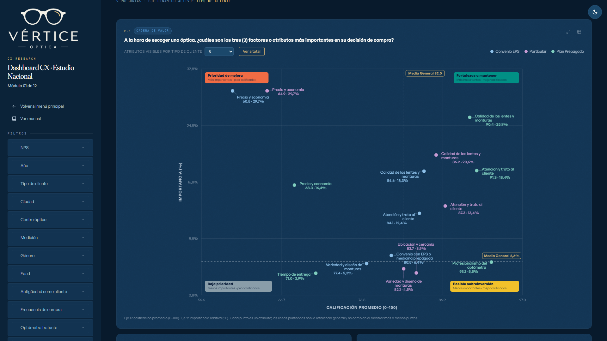

Estudio de experiencia de cliente para una cadena de ópticas: 820 encuestas, dos mediciones y cinco regionales. La empresa y los datos son ficticios; el estudio es real de principio a fin.

La cadena de valor
Una matriz de importancia contra calificación que ordena por cuál atributo conviene empezar. La importancia no la infiere un modelo: el cliente menciona sus tres factores decisivos, los ordena y los califica, y la gráfica cruza ese peso con la nota que le da a la marca. Los cuatro cuadrantes dicen dónde invertir y dónde ya está resuelto.
Pipeline en Python que procesa la encuesta y calcula NPS, medias 0–100, voz del cliente y la matriz de importancia/calificación, con el cruce por segmento de negocio y por regional.
Dashboard web autocontenido: un solo archivo, sin licencias ni servidor, con filtros, segmentación dinámica y comparativo 2025 vs. 2026. Las tablas se copian directo a Excel o PowerPoint.
Informe ejecutivo de 103 láminas con gráficas nativas editables: hallazgos por módulo, conclusiones y focos de acción, con cada afirmación anclada a la lámina que la respalda.
Control de calidad automatizado: 25 comprobaciones que recalculan cada cifra del informe desde la microdata.
Este proyecto es una demo: la empresa y los datos son 100% ficticios,
creados solo para mostrar el alcance del trabajo. No contiene información de clientes
reales.